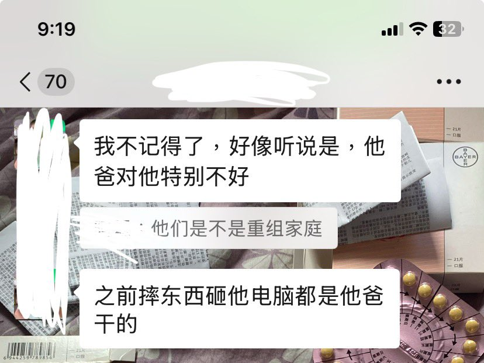

海月水母x17
@17nuun
@QimoHK300311 @Kagura_Yukikaze 或许我也应该去保管水水的遗物…
他的父母同样差劲…

HK_本人qimo丶🍥🏳️⚧️
@QimoHK300311
我之所以要一条筋的去努力收集雪风信息和个人物品的主要原因就是我信不过雪风家里人，你难道指望一个雪风割手被发现非但不处理解决雪风的问题反而打骂她砸她手机电脑让他只能用手表依靠外界求助 然后在雪风状态不好的情况下随随便便就断了雪风的药不让她去复诊不关心她状态对她那么差的父母去保管？ https://t.co/KpfcrGX3x7